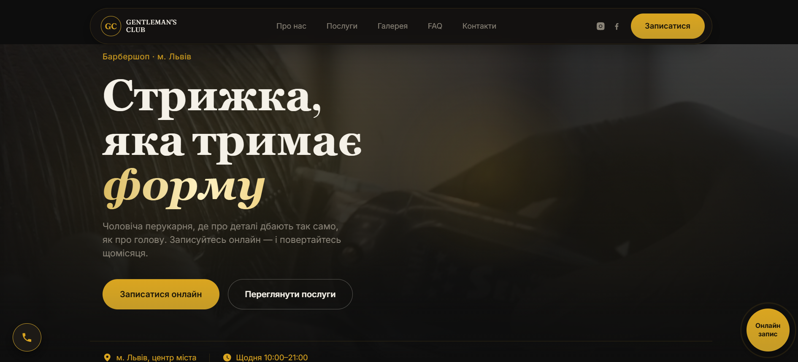
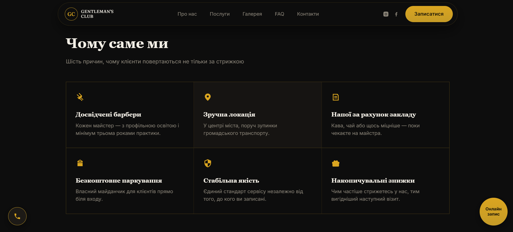
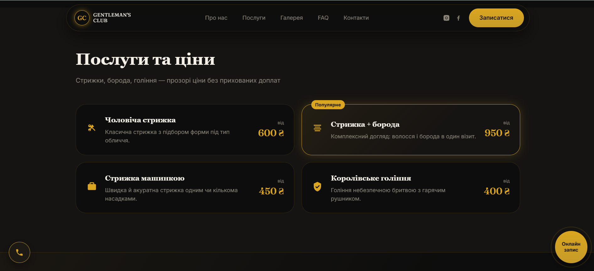
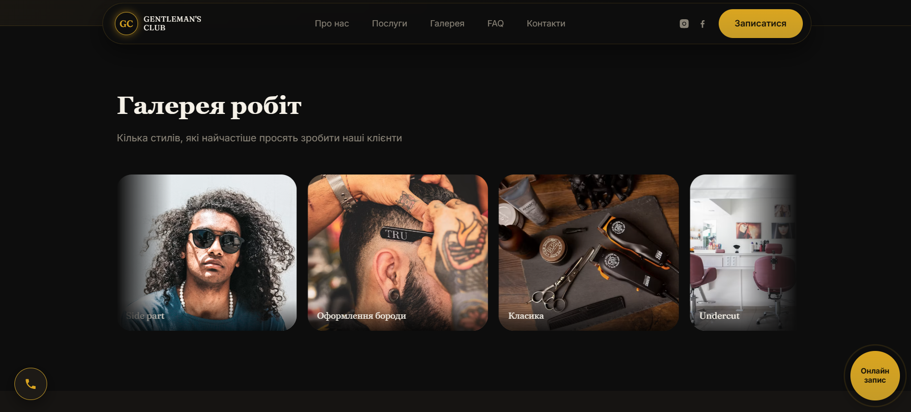
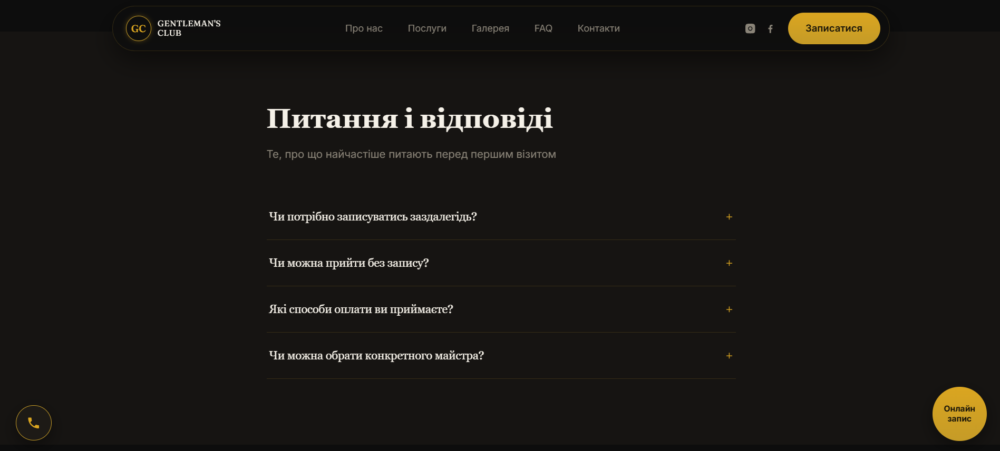
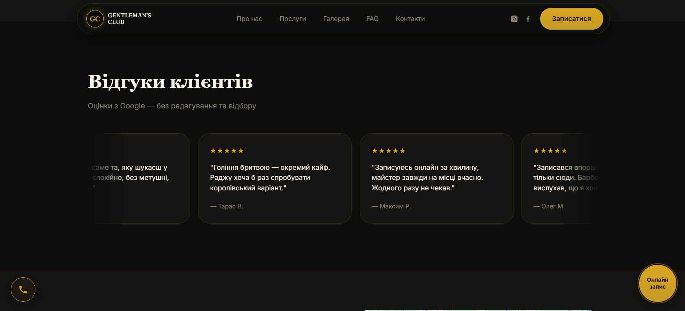
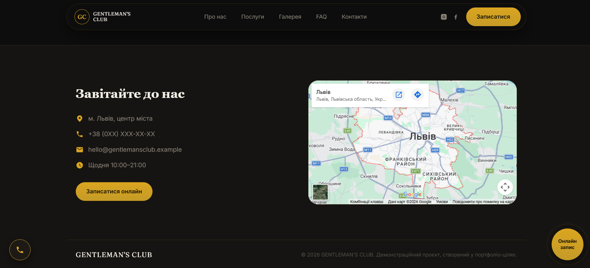

BarberCraft
Premium, ciemna strona typu landing page dla fikcyjnego salonu fryzjerskiego — zbudowana w czystym HTML5, CSS3 i JavaScript, bez frameworków, jako demonstracja nowoczesnego, responsywnego frontendu i dbałości o detal wizualny.
Strona w akcji







Premium doświadczenie
zaprojektowane w kodzie
Barber Craft Landing to nowoczesna, ciemna strona typu landing page stworzona dla fikcyjnego salonu fryzjerskiego. Projekt powstał wyłącznie w celach edukacyjnych i portfolio — jako pokaz umiejętności budowania premium interfejsu wyłącznie w oparciu o semantyczny HTML5, nowoczesny CSS3 i lekki, zależnościowo niezależny JavaScript.
Cały projekt — nazwa salonu, zdjęcia, recenzje, cennik i dane kontaktowe — jest wymyślony. Strona nie reprezentuje żadnego rzeczywistego biznesu ani klienta.
Stack technologiczny
Jak zbudowana jest strona
Strona opiera się na znacznikach semantycznych HTML5, co poprawia dostępność, SEO oraz czytelność kodu.
<header>...</header> <main> <section id="uslugi">...</section> <section id="portfolio">...</section> </main>
Paleta i odstępy zdefiniowane jako zmienne CSS, dzięki czemu spójny, premium motyw jest łatwy do utrzymania i rozwijania.
:root {
--gold: #c9a15a;
--void: #0a0806;
}
Menu typu hamburger otwierane i zamykane w czystym JavaScript, bez dodatkowych zależności.
ham.addEventListener("click", () =>
drawer.classList.toggle("open"));
Siatka kart usług prezentuje ofertę salonu wraz z cenami, zbudowana na CSS Grid.
.services-grid {
display: grid;
grid-template-columns: repeat(3, 1fr);
}
Portfolio prac renderowane jest jako klikalna galeria z pełnoekranowym podglądem — dokładnie tak, jak w sekcji screenshotów tej strony.
function openLightbox(i) {
lightbox.classList.add("open");
}
Walidacja pól po stronie klienta w JavaScript — formularz ma charakter demonstracyjny i nie wysyła danych na żaden backend.
form.addEventListener("submit", e => {
e.preventDefault();
validate(form);
});
Co wyróżnia projekt
Dlaczego te technologie
| Technologia | Zastosowanie | Powód wyboru |
|---|---|---|
| HTML5 | Struktura strony | Semantyka, dostępność, SEO bez narzutu frameworka |
| CSS3 | Stylowanie i layout | Flexbox/Grid i zmienne CSS wystarczają dla landing page |
| JavaScript | Interaktywność | Menu mobilne, lightbox, walidacja — bez zbędnych zależności |
| Media Queries | Responsywność | Pełna kontrola nad breakpointami bez frameworka CSS |
| Google Fonts | Typografia | Szybkie wdrożenie premium fontów bez lokalnych plików |
| Vercel | Hosting / deployment | Automatyczny deployment z main, darmowy SSL i CDN |
Jak uruchomić
git clone https://github.com/Andrii418/barber-craft-landing.git
cd barber-craft-landing # otwórz index.html w przeglądarce # lub uruchom rozszerzenie Live Server
vercel --prod
O projekcie
Uwaga: Barber Craft Landing to w całości fikcyjny projekt stworzony wyłącznie w celach edukacyjnych i portfolio. Wszystkie dane, nazwy, zdjęcia, recenzje i informacje kontaktowe są wymyślone i nie reprezentują żadnego rzeczywistego salonu fryzjerskiego ani klienta.